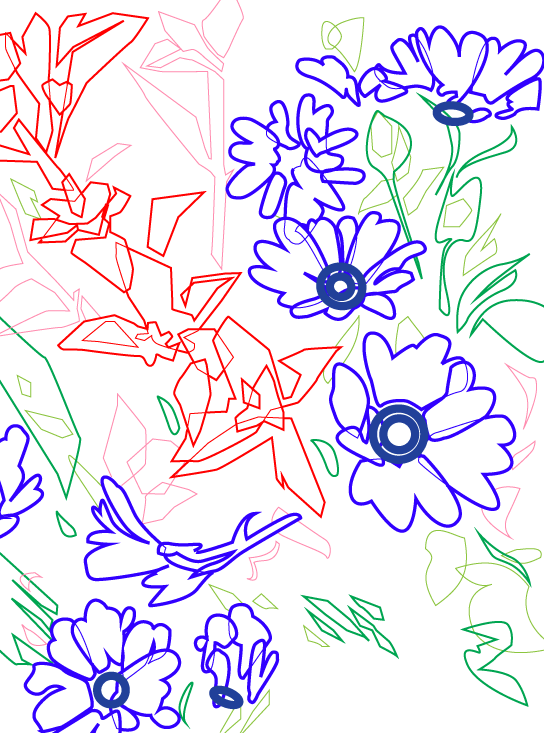
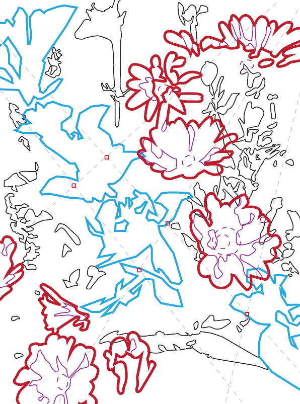
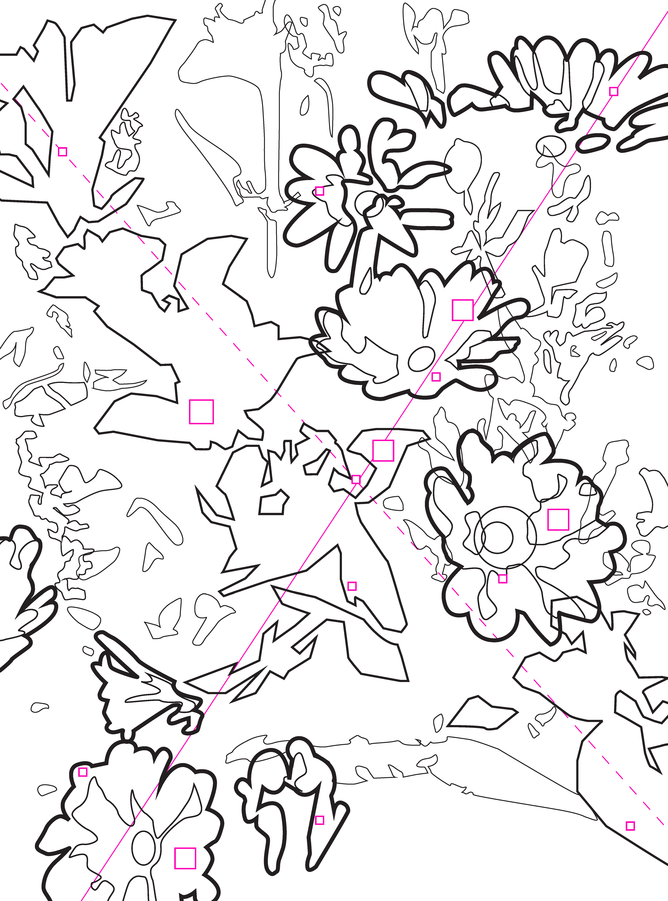
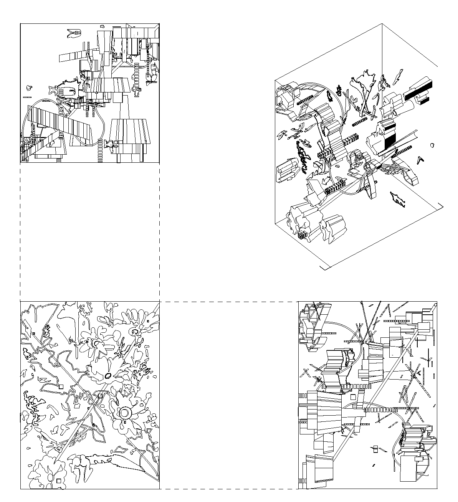
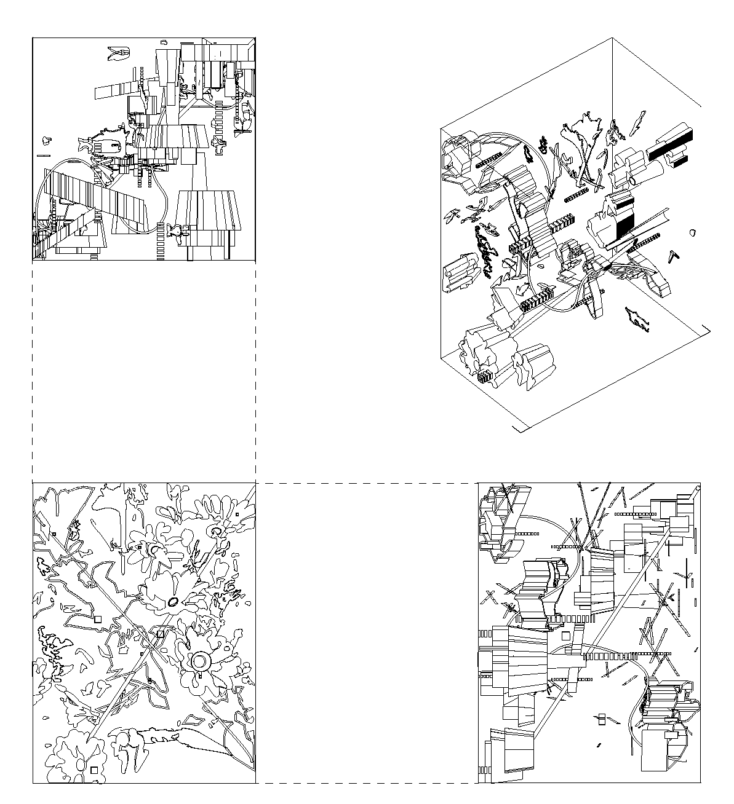

Flatness Vs Projection
Facing the first project for FoD:R, Flatness vs Projection, this project presented the objective of exploring the use of space within the combination of form and flat design outputs. Starting from my own unique origin source – A sole Polaroid photo- the highest consideration I took emphasised exploring the contextual texture each component creates. Image Bloom, Blur and extreme contrast became the focal point within my Illustrator and modelling work, resulting in a scene presenting distinct characteristics informed by each design phase.
Origin

Considering this task's derivative style, my overall project reflects a collection of my development approach ideas, inspired from one stage, and morphed through others. I composed an ‘Ecosystem’ as my overarching theme in 3D out of ideas of complementary systems and micro-organism-like traits. Spurring my idea of Inquisitation – my practice followed my questions to my process: How can I distinguish between each component of my work? And how can I relate the different forms that appear across the work?
Project
   

This project prompted me to consider a selection of places to improve my work through feedback I received to propel my work further, giving me ample opportunity to seek more improvement within all stages of my design process. My scope of work had its limits. However, I finished this assignment feeling determined to further create more purposeful, considered moves within my practice and think beyond the initial levels of my origin pieces.